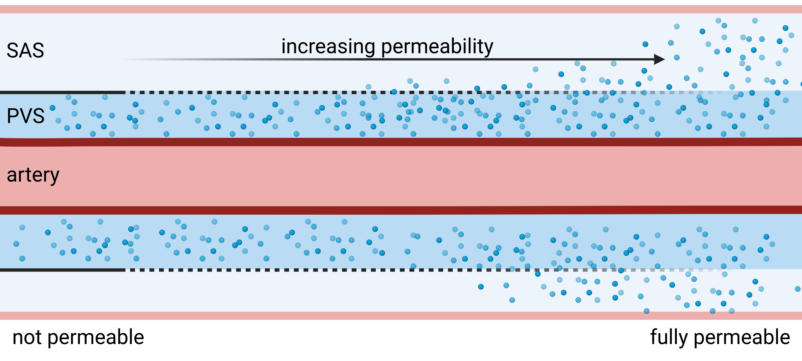

<html lang="en">
    <head>
        <meta charset="UTF-8">
        <meta name="viewport" content="width=device-width, initial-scale=1.0">
        <title>Figure 4</title>
        <style>
        @page {
            size: A4;
            margin: 1cm;
        }

        body {
            font-family: Arial, sans-serif;
        }

        h5 {
            color: black;
            text-align: center;
            font-size: 9pt;
            font-family: Helvetica;
        }
        h4 {
            color: black;
            text-align: left;
            font-size: 8pt;
            font-family: Helvetica;
        }

        p {
            text-align: center;
            font-size: 9pt;
        }
        img {
            object-fit:contain;
        }
    </style>
    </head>
</html>


<p style="position:absolute;left:442px;top:250px;width:80px;height:10pt;rotate:-90deg;">baseline +VM</p>
<p style="position:absolute;left:450px;top:329px;width:80px;height:20pt;rotate:-90deg;">baseline +VM (ξx1000)</p>


<svg style="left:285.451px;top:326.972px;position:absolute;width:135px;height:97px;overflow:visible;stroke:black;stroke-width:2px;"></svg>


<p style="position:absolute;left:442px;top:451px;width:80px;height:10pt;rotate:-90deg;">baseline +VM</p>
<p style="position:absolute;left:450px;top:530px;width:80px;height:20pt;rotate:-90deg;">baseline +VM (ξx1000)</p>


<p style="position:absolute;left:442px;top:48px;width:80px;height:10pt;rotate:-90deg;">baseline +VM</p>
<p style="position:absolute;left:450px;top:127px;width:80px;height:20pt;rotate:-90deg;">baseline +VM (ξx1000)</p>
<div style="position:absolute;top:544px;/* -adjust the position as needed */
    left:20px;/* -adjust the position as needed */
    width:200px;/* -adjust the size as needed */
    height:100px;/* -adjust the size as needed */
    border:2px solid black;/* -black border */
background-color:rgba(0, 0, 0, 0.0);/* -transparent background */:;left:230px;width:27px;height:20px;transform-origin:22px 16px;translate:0px 0px;"></div>
<div style="position:absolute;top:475px;/* -adjust the position as needed */
    left:20px;/* -adjust the position as needed */
    width:200px;/* -adjust the size as needed */
    height:100px;/* -adjust the size as needed */
    border:2px solid black;/* -black border */
background-color:rgba(0, 0, 0, 0.0);/* -transparent background */:;left:169px;width:27px;height:20px;transform-origin:22px 16px;translate:0px 0px;"></div>
<div style="position:absolute;top:492px;/* -adjust the position as needed */
    left:20px;/* -adjust the position as needed */
    width:200px;/* -adjust the size as needed */
    height:100px;/* -adjust the size as needed */
    border:2px solid black;/* -black border */
background-color:rgba(0, 0, 0, 0.0);/* -transparent background */:;left:305px;width:27px;height:20px;transform-origin:22px 16px;translate:0px 0px;"></div>
<p style="position:absolute;left:450px;top:733px;width:80px;height:20pt;rotate:-90deg;">baseline +VM (ξx1000)</p>
<p style="position:absolute;left:442px;top:654px;width:80px;height:10pt;rotate:-90deg;">baseline +VM</p>


<h4 style="position:absolute;left:475px;top:-9px;width:40px;height:21px;">BA</h4>
<h4 style="position:absolute;left:475px;top:191px;width:58px;height:21px;">MCA-L</h4>
<h4 style="position:absolute;left:475px;top:393px;width:58px;height:21px;">MCA-R</h4>
<h4 style="position:absolute;left:475px;top:596px;width:58px;height:21px;">ACA-A3</h4>
<div style="position:absolute;top:414px;/* -adjust the position as needed */
    left:20px;/* -adjust the position as needed */
    width:200px;/* -adjust the size as needed */
    height:100px;/* -adjust the size as needed */
    border:2px solid black;/* -black border */
background-color:rgba(0, 0, 0, 0.0);/* -transparent background */:;left:271px;width:27px;height:20px;transform-origin:22px 16px;translate:0px 0px;"></div>


<p style="position:absolute;left:-32px;top:654px;width:80px;height:10pt;rotate:-90deg;">baseline +VM</p>
<p style="position:absolute;left:-24px;top:733px;width:80px;height:20pt;rotate:-90deg;">baseline +VM (ξx1000)</p>
<h4 style="position:absolute;left:1px;top:596px;width:58px;height:21px;">ACA-A2</h4>
